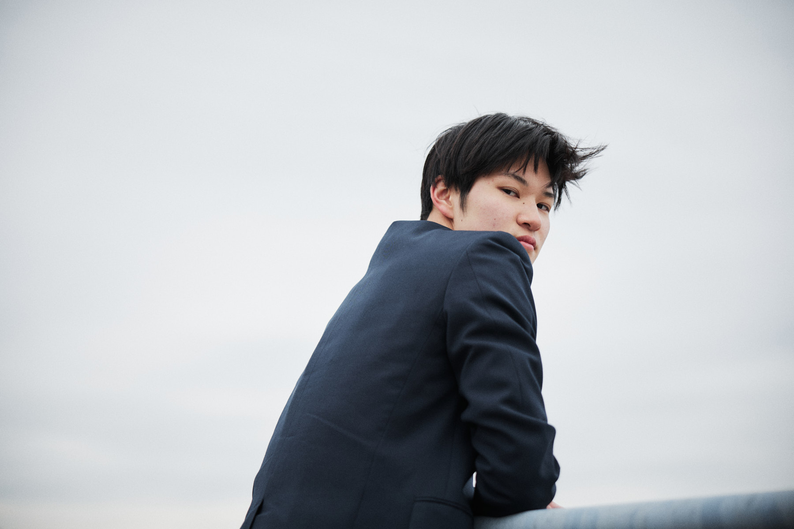
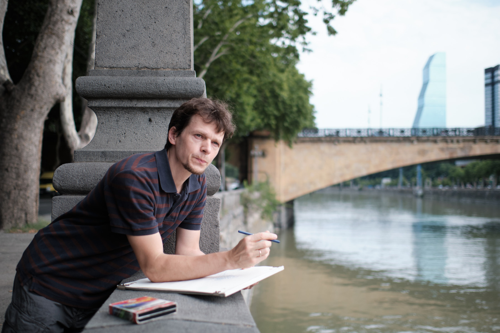

Projects
Projects.
Bodies of work shot over weeks or months. Campaigns, journeys, sustained portraits.

Damaged Tokyo

Russia → Morocco

Bunkyo School

Projects
Bodies of work shot over weeks or months. Campaigns, journeys, sustained portraits.

